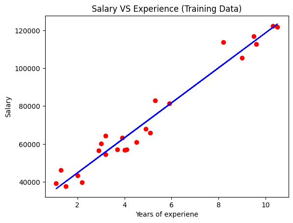
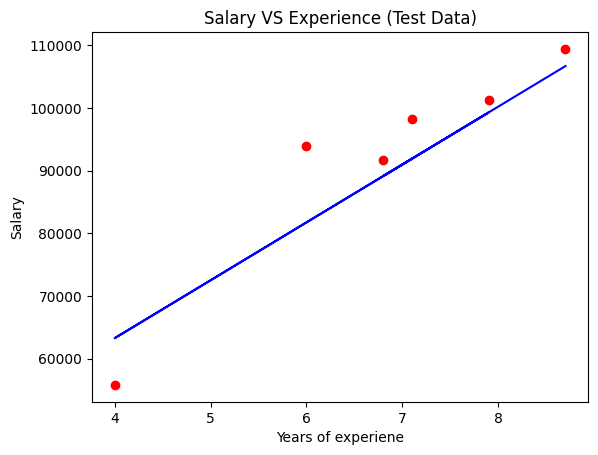
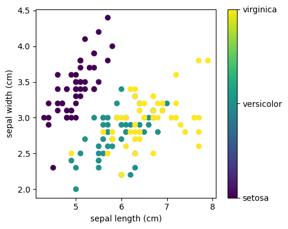

16.4. Select and Train a Model#
16.4.1. Splitting data into Train and Test#
import numpy as np
from sklearn.model_selection import train_test_split
X, y = np.arange(10).reshape((5, 2)), [0, 1, 0, 0, 1]
X
list(y)
# X -- feature
# y -- label
[0, 1, 0, 0, 1]
X_train, X_test, y_train, y_test = train_test_split(X, y, test_size=0.2)
X_train
y_train
X_test
y_test
[1]
X_train, X_test, y_train, y_test = train_test_split(
X, y, test_size=0.40, random_state=43)
X_train
y_train
X_test
y_test
[0, 0]
X_train, X_test, y_train, y_test = train_test_split(
X, y, test_size=0.33, random_state=42)
X_train
y_train
X_test
y_test
[1, 1]
X_train, X_test, y_train, y_test = train_test_split(
X, y, test_size=0.33, random_state=np.random)
X_train
y_train
X_test
y_test
---------------------------------------------------------------------------
InvalidParameterError Traceback (most recent call last)
Cell In[5], line 1
----> 1 X_train, X_test, y_train, y_test = train_test_split(
2 X, y, test_size=0.33, random_state=np.random)
4 X_train
6 y_train
File ~/anaconda3/envs/book/lib/python3.10/site-packages/sklearn/utils/_param_validation.py:204, in validate_params.<locals>.decorator.<locals>.wrapper(*args, **kwargs)
201 to_ignore += ["self", "cls"]
202 params = {k: v for k, v in params.arguments.items() if k not in to_ignore}
--> 204 validate_parameter_constraints(
205 parameter_constraints, params, caller_name=func.__qualname__
206 )
208 try:
209 with config_context(
210 skip_parameter_validation=(
211 prefer_skip_nested_validation or global_skip_validation
212 )
213 ):
File ~/anaconda3/envs/book/lib/python3.10/site-packages/sklearn/utils/_param_validation.py:96, in validate_parameter_constraints(parameter_constraints, params, caller_name)
90 else:
91 constraints_str = (
92 f"{', '.join([str(c) for c in constraints[:-1]])} or"
93 f" {constraints[-1]}"
94 )
---> 96 raise InvalidParameterError(
97 f"The {param_name!r} parameter of {caller_name} must be"
98 f" {constraints_str}. Got {param_val!r} instead."
99 )
InvalidParameterError: The 'random_state' parameter of train_test_split must be an int in the range [0, 4294967295], an instance of 'numpy.random.mtrand.RandomState' or None. Got <module 'numpy.random' from '/home/mkzia/anaconda3/envs/book/lib/python3.10/site-packages/numpy/random/__init__.py'> instead.
X_train, X_test, y_train, y_test = train_test_split(
X, y, test_size=0.33, random_state=np.random)
X_train
y_train
X_test
y_test
---------------------------------------------------------------------------
InvalidParameterError Traceback (most recent call last)
Cell In[6], line 1
----> 1 X_train, X_test, y_train, y_test = train_test_split(
2 X, y, test_size=0.33, random_state=np.random)
4 X_train
6 y_train
File ~/anaconda3/envs/book/lib/python3.10/site-packages/sklearn/utils/_param_validation.py:204, in validate_params.<locals>.decorator.<locals>.wrapper(*args, **kwargs)
201 to_ignore += ["self", "cls"]
202 params = {k: v for k, v in params.arguments.items() if k not in to_ignore}
--> 204 validate_parameter_constraints(
205 parameter_constraints, params, caller_name=func.__qualname__
206 )
208 try:
209 with config_context(
210 skip_parameter_validation=(
211 prefer_skip_nested_validation or global_skip_validation
212 )
213 ):
File ~/anaconda3/envs/book/lib/python3.10/site-packages/sklearn/utils/_param_validation.py:96, in validate_parameter_constraints(parameter_constraints, params, caller_name)
90 else:
91 constraints_str = (
92 f"{', '.join([str(c) for c in constraints[:-1]])} or"
93 f" {constraints[-1]}"
94 )
---> 96 raise InvalidParameterError(
97 f"The {param_name!r} parameter of {caller_name} must be"
98 f" {constraints_str}. Got {param_val!r} instead."
99 )
InvalidParameterError: The 'random_state' parameter of train_test_split must be an int in the range [0, 4294967295], an instance of 'numpy.random.mtrand.RandomState' or None. Got <module 'numpy.random' from '/home/mkzia/anaconda3/envs/book/lib/python3.10/site-packages/numpy/random/__init__.py'> instead.
import pandas as pd
from sklearn import datasets, linear_model
from sklearn.model_selection import train_test_split
from matplotlib import pyplot as plt
diabetes = datasets.load_diabetes()
diabetes.data.shape
feature_names = diabetes.feature_names
feature_names
['age', 'sex', 'bmi', 'bp', 's1', 's2', 's3', 's4', 's5', 's6']
df = pd.DataFrame(diabetes.data, columns=feature_names)
y = diabetes.target
df
y
df.shape
(442, 10)
X_train, X_test, y_train, y_test = train_test_split(df, y, test_size=0.2, random_state=np.random)
X_train
y_train
X_test
y_test
---------------------------------------------------------------------------
InvalidParameterError Traceback (most recent call last)
Cell In[9], line 1
----> 1 X_train, X_test, y_train, y_test = train_test_split(df, y, test_size=0.2, random_state=np.random)
3 X_train
5 y_train
File ~/anaconda3/envs/book/lib/python3.10/site-packages/sklearn/utils/_param_validation.py:204, in validate_params.<locals>.decorator.<locals>.wrapper(*args, **kwargs)
201 to_ignore += ["self", "cls"]
202 params = {k: v for k, v in params.arguments.items() if k not in to_ignore}
--> 204 validate_parameter_constraints(
205 parameter_constraints, params, caller_name=func.__qualname__
206 )
208 try:
209 with config_context(
210 skip_parameter_validation=(
211 prefer_skip_nested_validation or global_skip_validation
212 )
213 ):
File ~/anaconda3/envs/book/lib/python3.10/site-packages/sklearn/utils/_param_validation.py:96, in validate_parameter_constraints(parameter_constraints, params, caller_name)
90 else:
91 constraints_str = (
92 f"{', '.join([str(c) for c in constraints[:-1]])} or"
93 f" {constraints[-1]}"
94 )
---> 96 raise InvalidParameterError(
97 f"The {param_name!r} parameter of {caller_name} must be"
98 f" {constraints_str}. Got {param_val!r} instead."
99 )
InvalidParameterError: The 'random_state' parameter of train_test_split must be an int in the range [0, 4294967295], an instance of 'numpy.random.mtrand.RandomState' or None. Got <module 'numpy.random' from '/home/mkzia/anaconda3/envs/book/lib/python3.10/site-packages/numpy/random/__init__.py'> instead.
X_train.shape
len(y_train)
X_test.shape
len(y_test)
2
16.4.2. Linear Regression Example#
To predict a numerical value
import numpy as np
from sklearn.linear_model import LinearRegression
X = np.array([[1, 1], [1, 2], [2, 2], [2, 3]])
# y = 1 * x_0 + 2 * x_1 + 3
y = np.dot(X, np.array([1, 2])) + 3
reg = LinearRegression().fit(X, y)
reg.score(X, y)
reg.coef_
reg.intercept_
# y = mx + b
reg.predict(np.array([[3, 5]]))
array([16.])
import numpy as np
import pandas as pd
from sklearn.model_selection import train_test_split
from sklearn.linear_model import LinearRegression
from sklearn import metrics
from sklearn.metrics import r2_score
dataset=pd.read_csv('Salary_Data.csv')
dataset.head()
dataset.shape
dataset
| YearsExperience | Salary | |
|---|---|---|
| 0 | 1.1 | 39343.0 |
| 1 | 1.3 | 46205.0 |
| 2 | 1.5 | 37731.0 |
| 3 | 2.0 | 43525.0 |
| 4 | 2.2 | 39891.0 |
| 5 | 2.9 | 56642.0 |
| 6 | 3.0 | 60150.0 |
| 7 | 3.2 | 54445.0 |
| 8 | 3.2 | 64445.0 |
| 9 | 3.7 | 57189.0 |
| 10 | 3.9 | 63218.0 |
| 11 | 4.0 | 55794.0 |
| 12 | 4.0 | 56957.0 |
| 13 | 4.1 | 57081.0 |
| 14 | 4.5 | 61111.0 |
| 15 | 4.9 | 67938.0 |
| 16 | 5.1 | 66029.0 |
| 17 | 5.3 | 83088.0 |
| 18 | 5.9 | 81363.0 |
| 19 | 6.0 | 93940.0 |
| 20 | 6.8 | 91738.0 |
| 21 | 7.1 | 98273.0 |
| 22 | 7.9 | 101302.0 |
| 23 | 8.2 | 113812.0 |
| 24 | 8.7 | 109431.0 |
| 25 | 9.0 | 105582.0 |
| 26 | 9.5 | 116969.0 |
| 27 | 9.6 | 112635.0 |
| 28 | 10.3 | 122391.0 |
| 29 | 10.5 | 121872.0 |
16.4.2.1. Selecting the data#
X = dataset.iloc[:, :-1].values
y = dataset.iloc[:, 1].values
X
y
array([ 39343., 46205., 37731., 43525., 39891., 56642., 60150.,
54445., 64445., 57189., 63218., 55794., 56957., 57081.,
61111., 67938., 66029., 83088., 81363., 93940., 91738.,
98273., 101302., 113812., 109431., 105582., 116969., 112635.,
122391., 121872.])
16.4.2.2. Split the data#
from sklearn.model_selection import train_test_split
X_train, X_test, y_train, y_test=train_test_split(X, y, test_size=0.20)
16.4.2.3. Train and Test#
from sklearn.linear_model import LinearRegression
regressor=LinearRegression()
regressor.fit(X_train,y_train)
y_pred=regressor.predict(X_test)
y_pred
y_test
metrics.mean_squared_error(y_test, y_pred, squared=False)
6624.121931898789
r2_score(y_test, y_pred)
regressor.coef_
regressor.intercept_
26265.435135635766
plt.scatter(X_train,y_train,color='red')
plt.plot(X_train,regressor.predict(X_train),color='blue')
plt.title('Salary VS Experience (Training Data)')
plt.xlabel('Years of experiene')
plt.ylabel('Salary')
plt.show()

plt.scatter(X_test,y_test,color='red')
plt.plot(X_test,regressor.predict(X_test),color='blue')
plt.title('Salary VS Experience (Test Data)');
plt.xlabel('Years of experiene');
plt.ylabel('Salary');
plt.show()

16.4.2.4. Apply DecisionTreeRegressor#
Decision Trees are good for finding complex nonlinear relationships
X = dataset.iloc[:, :-1].values
y = dataset.iloc[:, 1].values
from sklearn.model_selection import train_test_split
X_train, X_test, y_train, y_test=train_test_split(X, y, test_size=0.20)
from sklearn.tree import DecisionTreeRegressor
regressor=DecisionTreeRegressor()
regressor.fit(X_train,y_train)
y_pred=regressor.predict(X_test)
y_pred
y_test
metrics.mean_squared_error(y_test, y_pred, squared=False)
6733.42417843007
16.4.2.5. Cross-Validation#
from sklearn.pipeline import make_pipeline
X = dataset.iloc[:, :-1].values
y = dataset.iloc[:, 1].values
preprocessing = make_pipeline(StandardScaler())
reg_pipeline = make_pipeline(preprocessing, LinearRegression())
reg_pipeline.fit(X, y)
y_pred=reg_pipeline.predict(X)
metrics.mean_squared_error(y, pred, squared=False)
from sklearn.model_selection import cross_val_score
reg_rmses = cross_val_score(reg_pipeline, X, y, scoring="neg_root_mean_squared_error", cv=10)
---------------------------------------------------------------------------
NameError Traceback (most recent call last)
Cell In[20], line 4
2 X = dataset.iloc[:, :-1].values
3 y = dataset.iloc[:, 1].values
----> 4 preprocessing = make_pipeline(StandardScaler())
5 reg_pipeline = make_pipeline(preprocessing, LinearRegression())
6 reg_pipeline.fit(X, y)
NameError: name 'StandardScaler' is not defined
from sklearn.pipeline import make_pipeline
X = dataset.iloc[:, :-1].values
y = dataset.iloc[:, 1].values
preprocessing = make_pipeline(StandardScaler())
tree_pipeline = make_pipeline(preprocessing, DecisionTreeRegressor())
tree_rmses = cross_val_score(tree_pipeline, X, y, scoring="neg_root_mean_squared_error", cv=10)
pd.Series(tree_rmses).describe()
---------------------------------------------------------------------------
NameError Traceback (most recent call last)
Cell In[21], line 4
2 X = dataset.iloc[:, :-1].values
3 y = dataset.iloc[:, 1].values
----> 4 preprocessing = make_pipeline(StandardScaler())
5 tree_pipeline = make_pipeline(preprocessing, DecisionTreeRegressor())
6 tree_rmses = cross_val_score(tree_pipeline, X, y, scoring="neg_root_mean_squared_error", cv=10)
NameError: name 'StandardScaler' is not defined
16.4.3. Classification Example#
from sklearn.datasets import load_iris
from sklearn.model_selection import train_test_split
from sklearn import metrics
from sklearn.naive_bayes import GaussianNB
# Load the data
from sklearn.datasets import load_iris
iris = load_iris()
from matplotlib import pyplot as plt
# The indices of the features that we are plotting
x_index = 0
y_index = 1
# this formatter will label the colorbar with the correct target names
formatter = plt.FuncFormatter(lambda i, *args: iris.target_names[int(i)])
plt.figure(figsize=(5, 4))
plt.scatter(iris.data[:, x_index], iris.data[:, y_index], c=iris.target)
plt.colorbar(ticks=[0, 1, 2], format=formatter)
plt.xlabel(iris.feature_names[x_index])
plt.ylabel(iris.feature_names[y_index])
plt.tight_layout()
plt.show()

X = iris.data
Y = iris.target
X_train, X_test, y_train, y_test=train_test_split(X, Y, test_size=0.2, random_state=0)
gnb = GaussianNB()
gnb.fit(X_train, y_train)
y_pred = gnb.predict(X_test)
100*metrics.accuracy_score(y_test, y_pred)
96.66666666666667